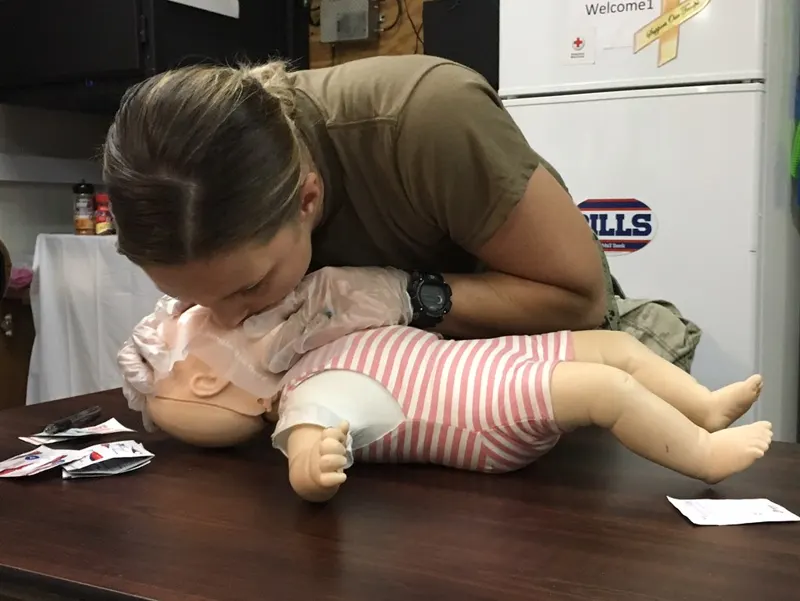

С 1993 года · м. Текстильщики
Учебный центр «МОСДОР»: охрана труда и рабочие профессии
Более 30 лет обучаем руководителей, специалистов и рабочих: охрана труда, работы на высоте, электро- и пожарная безопасность, стропальщики, водители погрузчиков, трактористы. Очно у метро «Текстильщики» и дистанционно.
1993год основания
30+лет обучаем специалистов
16 чпрограммы А, Б, В по охране труда
3формы: очно, заочно, дистанционно


Учебный центр с 1993 года
НОЧУ ДПО «МОСДОР» — частный учебный центр у метро «Текстильщики». Обучаем по программам профессионального обучения, переподготовки и повышения квалификации рабочих и специалистов на основании бессрочной лицензии.
Охрана трудаПервая помощьРаботы на высотеОграниченные пространстваСИЗЭлектробезопасностьТепловые энергоустановкиПожарная безопасность
Документы после обучения
Протокол и удостоверение
По охране труда — с внесением сведений в реестр обученных лиц Минтруда России.
Удостоверение о повышении квалификации
Электро-, пожарная, промышленная безопасность, ГО и ЧС.
Диплом о переподготовке
Специалист в области охраны труда, техносферная безопасность — 256 часов.
Запишитесь на обучение — пришлём договор и счёт
Москва, ул. Артюхиной, 6, корп. 1 · м. «Текстильщики»